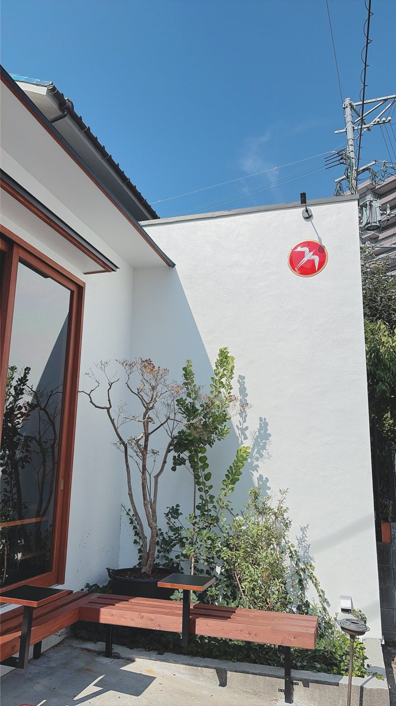

福岡でゆっくり読書できるカフェ4選
福岡でひとりで本を読んだり、友人と落ち着いて話したりできるカフェを探している人へ。実際に訪れた中から、長居しやすく、ゆったりとした時間が流れるお店を4つ選びました。
作業向きかどうかも書いているので、目的に合わせて選んでみてください。
朝の光の中で過ごすなら「フグレン」
けやき通りから1本入った住宅街にあり、朝早くから開いています。オープン直後は空いていて、窓際やテーブル席では読書やPC作業をしている人がたくさんいました。
作業もしやすいので、朝活に使いたい人にも向いています。

フグレン
📍 赤坂
ソファで長居するなら「Basking Coffee ropponmatsu」
2階は屋根裏部屋のような空間で、ソファ席の居心地がとにかく良く、つい長居してしまうほど。椅子や机はPC作業には向かないので、作業より読書や会話を楽しみたい日におすすめです。
土日はソファ席が埋まりやすいので、平日の昼間が狙い目です。

Basking Coffee ropponmatsu
📍 六本松
作業から離れたいなら「珈琲 美美」
入口の大きな焙煎機が出迎えてくれる、レトロな珈琲店。2階の席では木漏れ日を浴びながら過ごせます。
作業をする場所というより、日々の忙しさから離れてリフレッシュするための場所です。
珈琲 美美
📍 赤坂
ひとりでじっくりなら「unplugged COFFEE STAND fukuoka」
少し薄暗く、ウッド調で統一された落ち着いた店内。カウンター席は一人でも座りやすく、数十種類から選べるコーヒーを味わいながら読書をするのにぴったりです。
unplugged COFFEE STAND fukuoka
📍 六本松
作業もしたいならフグレン、とにかく居心地を重視するならBasking Coffee、作業から離れたいなら珈琲 美美、ひとりで静かに過ごすならunplugged、というふうに選んでみてください。